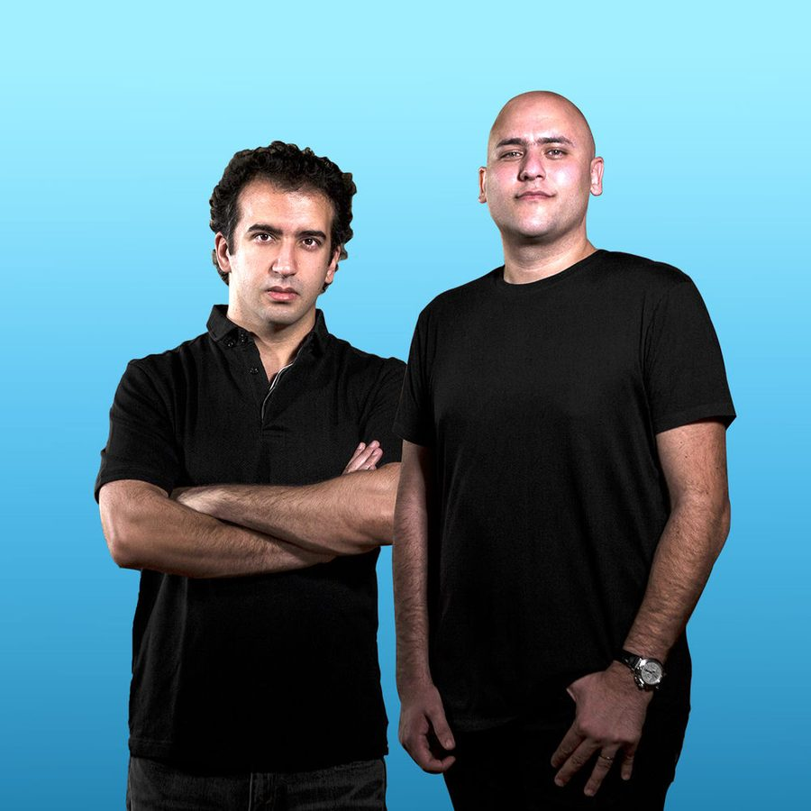

Aly & Fila: Future sound of Egypt


When ITM chatted to Fadi Wassef Naguib AKA ‘Fila’ of Aly & Fila fame early in March, it was just behind the mainstage of Trance Energy in Holland when the party was in full peaktime swing. Everytime the door to the press room was thrown open, the deafening sound of Armin van Buuren’s set (being performed to tens of thousands of punters, no less) was blasted in to completely drown out our conversation until the door was slammed shut again. But maybe it was fitting the world’s #1 DJ was interrupting the interview, as it’s that very same Dutchman who’s been responsible for putting the Egyptian duo on the map in the past 18 months.
Ali & Fila first caught the attention of the dance scene outside of Cairo several years ago with the release of Eye of Horus, but it was in late 2007 when they were recruited to Armin’s Armada record label that they really started getting heard. Their first single How Long was included on that year’s Universal Religion compilation, Armin’s live tribute to the Balearic charms of Ibiza, and shortly after they really began to pump out the beautifully produced remixes, in particular Armin’s If You Should Go as well as their epic rework of DJ Shah’s Back To You.
“Last year was a big boost for us in the scene. We’ve still got a lot more work to do, it’s just the beginning,” Fila told ITM, who was at Trance Energy to represent the pair on their DJ responsibilities, and also the one who’ll be playing Australia over the Easter Long Weekend. He was clearly on a massive high to be performing at such a key event, and his presence is about as unassuming and down to earth as you can get from someone who regularly plays to massive crowds. Like he says, the past year has been hugely important for the duo in terms of crafting their sound, and perfecting something that’s instantly recognisable; an achievement that’s sought after by pretty much every aspiring DJ/producer. “This was our goal with our productions, to reach everyone who listened to our sound, and for them to know this was Aly & Fila.”
It’s a sound that probably wouldn’t have been hugely out of place among the euphoric melodies and uplifting choruses that we were listening to ten years ago. It’s largely uncomplicated stuff, a touch fluffy perhaps (some might even call it ‘cheesy’ or ‘airy fairy’). If Scandinavia’s Marcus Schossow is the least traditional of the DJ/producers who are touring Australia with Trance Energy, then Ali & Fila are the most traditional. But Fila argues that we shouldn’t mistake ‘traditional’ for either ‘basic’ or ‘easy’.
“Our sound is a very simple one; but technically it’s not simple. If you look at it on the engineering side, it’s definitely not simple. We always use our time to craft really good melodies, and we always try to work on the core of the musical parts. So it’s easy to listen to, but not so easy to create.” And he’s exactly right, because as traditional as their sound is, what also sets Ali & Fila apart is how slick and accomplished it’s become. “We’ve really nailed how we engineer and master our sound. I think a lot of people admire what we’ve done… It’s a good thing to have, you always need to have at least something that sets you apart as special,” he laughs. It’s been a long road getting there, however. “In the beginning we’d finish the track and we’d be afraid to play it out, because we weren’t sure if it was 100 per cent quality. But if you keep trying to make it better, in time you get what you want. If you’re persistent and you want to reach it, then you’ll get it.”
Dubai might boast a notoriously opulent clubbing scene, but this hasn’t yet stretched to other cities in the Middle East, as Aly & Fila are pretty much the only notable act hailing from Cairo who are currently touring the world’s nightclubs. “The scene used to be quite big. It’s faded recently, but it’s like everything in that it up and down, and I think it’s going up again in Egypt.” He confirms they’ve got plans to bring something special to their scene, but he confirms they still enjoy a level on anonymity back home. “But for the people who listen to and enjoy dance music in Egypt, they’re all really proud. Even if they don’t like trance music, they’re really happy that someone from their country is doing it well and being heard outside.”
When Fila hit the ‘Future Stage’ at Trance Energy later that evening, any notion of their music being cheesy was quickly dismissed; it’s amazing how much driving energy their sound carries when it’s being belted out over a loud soundsytem. Australian fans will get to find out for themselves this weekend. “I’m looking forward to Trance Energy in Australia more than the Dutch one, to be honest,” Fila laughed, back in that poorly soundproofed press room.
Ali & Fila tours Australia with Trance Energy this Easter Long Weekend:
Thu 9 Apr – Sydney, Hordern Pavilion & Surrounds
Fri 10 Apr – Melbourne, Calder Park Thunderdome
Sat 11 Apr – Brisbane, The Met
Sun 12 Apr – Perth, Belvoir Amphitheatre
Check out ITM’s Festival Page for more Trance Energy news, interviews, DJ mixes and video clips as the tour finally touches down this weekend!